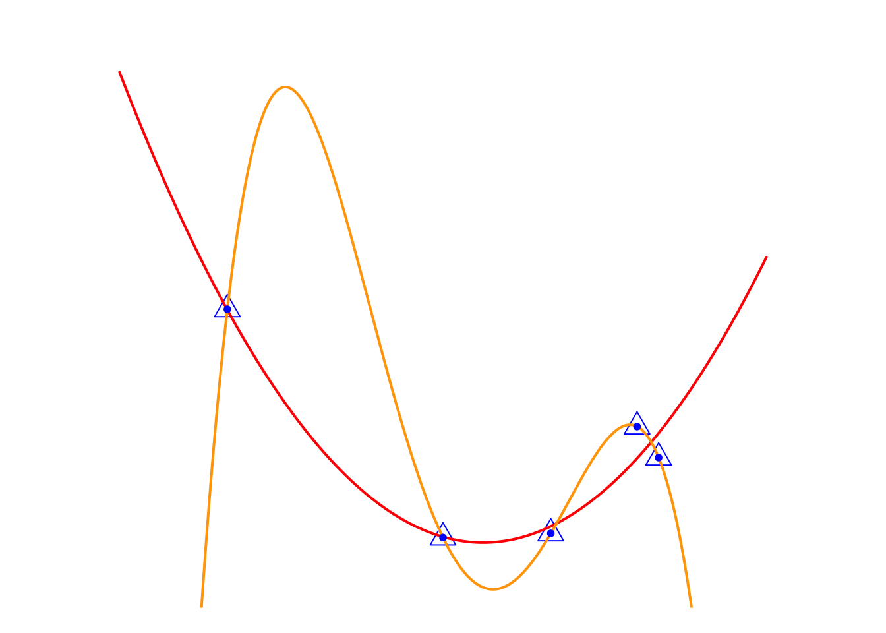
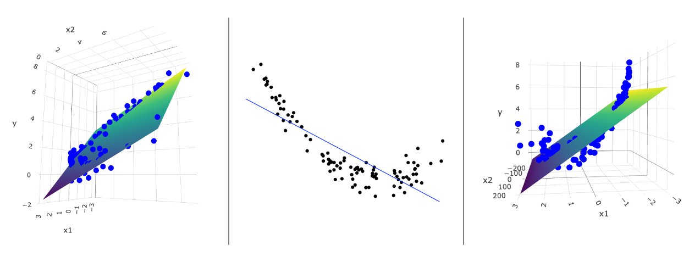
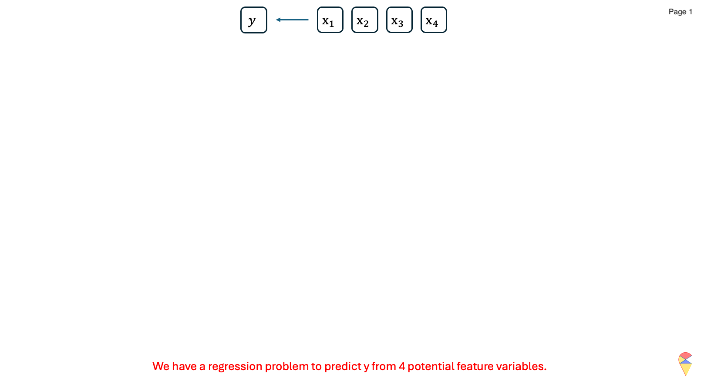
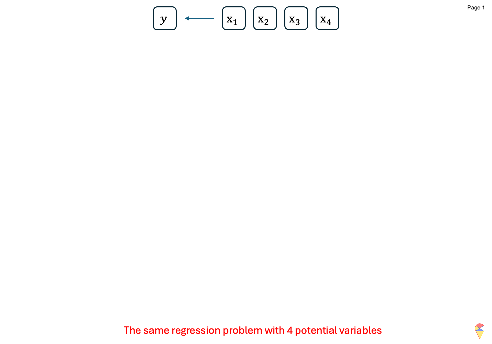
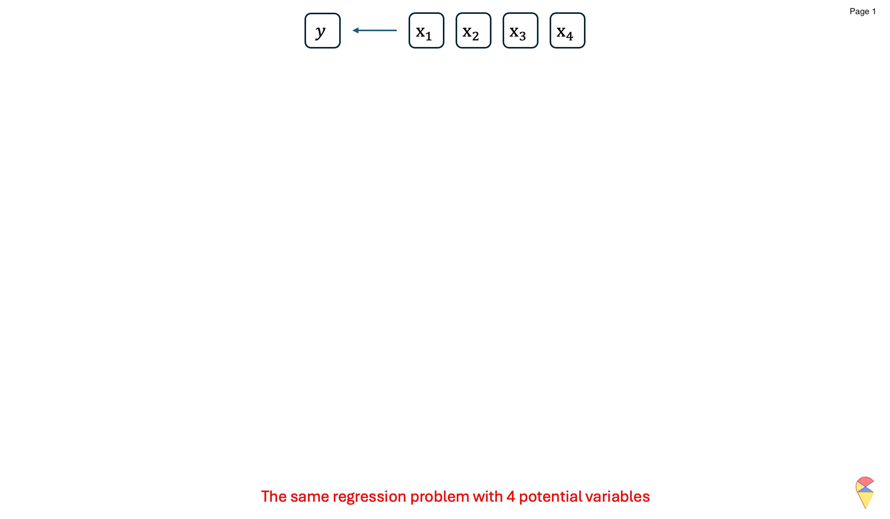
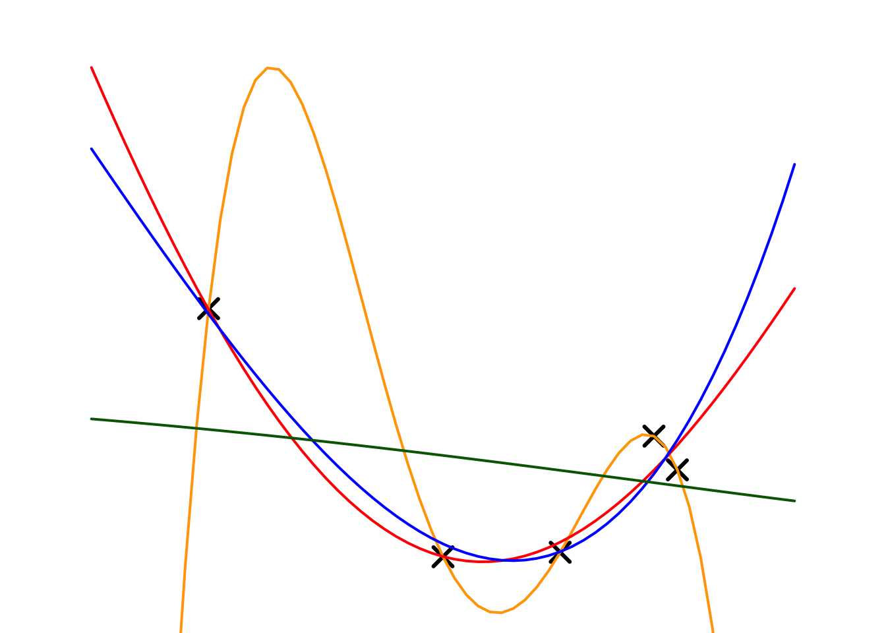
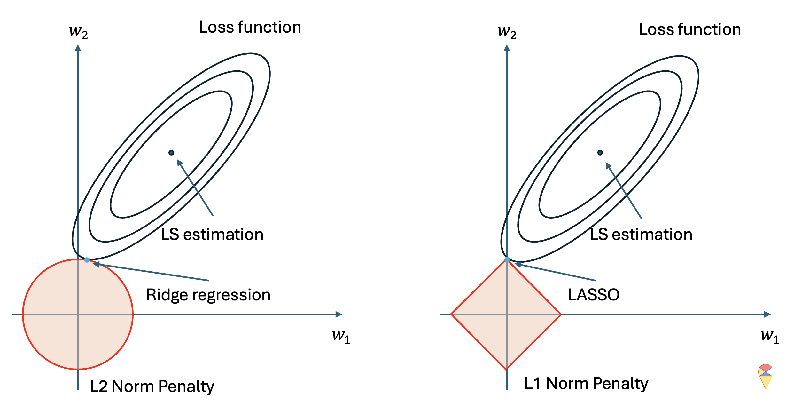

3. Feature Selection
Now is a good time to discuss the feature selection problem, as it can be formulated as a model selection problem and, in turn, can be viewed as a hyper-parameter tuning problem in a specific setting.
3.1 Overview
Feature selection is an important step in building machine learning models. First, reducing the dimensionality of the dataset is often necessary, and there are two main approaches to achieve this: feature extraction and feature selection. Second, feature selection also helps identify the most relevant features for training a model, and it can be particularly useful in choosing the appropriate feature mapping for training nonlinear models.
In practice, there are many convenient methods for selecting variables. For example, statistical tests like the t-test can be used to assess whether a variable is informative. In this section, we will frame feature selection as a model selection problem and introduce subset selection methods first. Second, we will show how feature selection can be transformed into a more manageable hyper-parameter tuning problem with penalty method.
3.2 Subset Selection
Let’s recall the main challenge of the nonlinear expansion idea mentioned in the previous lecture, which is feature mapping — how to correctly choose the feature mapping in order to obtain an appropriate augmented feature mapping.

Intuitively, deciding whether to go left or right is a model selection problem, \[ y = w_0 + w_1x + w_2x^2 \text{ V.S. } y = w_0 + w_1x + w_2x^5 \] but essentially it is a feature selection problem. From the perspective of feature selection, we have three feature variables, \(\{ x, x^2, x^5 \}\), to choose from, and the variables that end up in the optimal model are the selected ones. Therefore, the feature selection problem can be formulated as a model selection problem. Following this approach, we introduce three methods: best subset selection, forward stepwise selection, and backward stepwise selection.
3.2.1 Best Subset Selection
This method involves evaluating all possible subsets of features and selecting the one that results in the best model performance.
Algorithm: Best Subset Selection
Inputs:
- \(\textbf{X}\), a \(n\times p\) matrix, containing all \(p\) feature variables.
- \(y\) the target variable.
- \(\phi\): the metric to evaluate the model performance.
- Denote \(\mathcal{M}_0\) is the model without any feature variable, i.e. \(y = w_0 + \epsilon\)
Steps:
For \(k=1,2,\dots, p\):
- Consider all possible models that contain \(k\) feature variables.
- Train all the models and evaluate them with an evaluation metric \(\phi\).
- Record the best model and denote it as \(\mathcal{M}_k\).
Compare models across all \(\left\{\mathcal{M}_k\right\}_{k=1}^{p}\) and determine the overall best model.
Output: Return the index of feature variables in the overall best model.
Let’s have a look at the following concrete example:
Animation-Demo of Best Subset Selection:

Remark: While it guarantees the optimal subset, it is computationally expensive, especially when \(p\), the number of features is large. Indeed, evaluating all \(2^p\) possible subsets of feature variables becomes infeasible as the number of predictors, \(p\), grows large. Although one can set an upper limit on the number of feature variables included in the model, e.g. set the upper limit of the for loop as \(k_{max} < p\), there is a potential risk of missing better models and thereby excluding important features.
3.2.2 Stepwise Selection
To overcome the main drawback of best subset selection, stepwise selection is a heuristic method that iteratively builds or refines a model by either adding or removing predictors.
Forward Stepwise Selection (FSS):
It is an iterative method for feature selection. It starts with no feature variables in the model and adds them one at a time, selecting the one that most improves the model’s performance metric. This process continues iteratively, updating the model with the best combination of predictors, until the full model is reached, i.e., the model with all feature variables. More specifically, let’s read the algorithm below:
Algorithm: Forward Stepwise Selection
Inputs:
- \(\textbf{X}\), a \(n\times p\) matrix, containing all \(p\) feature variables.
- \(y\) the target variable.
- \(\phi\): the metric to evaluate the model performance.
- Denote \(\mathcal{M}_0\) is the model without any feature variable, i.e. \(y = w_0 + \epsilon\)
Steps:
For \(k=1,2,\dots, p\):
- Consider all possible models that model \(\mathcal{M}_{k-1}\) plus one more feature variable.
- Train all the models and evaluate them with an evaluation metric \(\phi\).
- Record the best model and denote it as \(\mathcal{M}_k\).
Compare models across all \(\left\{\mathcal{M}_k\right\}_{k=1}^{p}\) and determine the overall best model.
Output: Return the index of feature variables in the overall best model.
The concrete example:

From this specific example, it can be seen that, unlike best subset selection, forward stepwise selection does not evaluate all possible models, which makes the algorithm more efficient. However, this also means that the algorithm is a greedy solution, making locally optimal decisions at each step. This trade-off sacrifices the guarantee of finding the best subset but significantly reduces computational burden.
Backward Stepwise Selection (BSS):
Similar to FSS, Backward Stepwise Selection also offers another possible greedy solution. Unlike FSS, BSS starts with the full model and then iteratively removes features to select the optimal models in each step and find the overall best model across all steps. The algorithm is as follows:
Algorithm: Backward Stepwise Selection
Inputs:
- \(\textbf{X}\), a \(n\times p\) matrix, containing all \(p\) feature variables.
- \(y\) the target variable.
- \(\phi\): the metric to evaluate the model performance.
- Denote \(\mathcal{M}_p\) as the full model that containing all feature variables.
Steps:
For \(k= p-1, p-2, \dots, 1, 0\):
- Consider all possible models that model \(\mathcal{M}_{k+1}\) ignoring one feature variable.
- Train all the models and evaluate them with an evaluation metric \(\phi\).
- Record the best model and denote it as \(\mathcal{M}_k\).
Compare models across all \(\left\{\mathcal{M}_k\right\}_{k=1}^{p}\) and determine the overall best model.
Output: Return the index of feature variables in the overall best model.
The concrete example:

3.3 Regularization
We already have some feature selection methods, but subset selection algorithms have two major shortcomings. First, these methods either require extensive computation or risk getting stuck in local optima. Second, we often use loops to iterate over a series of models with varying complexity, which is both tedious and inefficient.
This leads us to two key questions:
- First, can we control model complexity with a single hyperparameter, similar to KNN?
- Second, can this approach avoid the risk of getting stuck in local optima?
The answer is yes—we can achieve this using regularization methods.
3.3.1 Conceptrual Ideas
Let’s review the toy example in the previous lecture.
In the previous lecture, we used it to introduce the problem of overfitting. Now, let’s look at this issue from the perspective of feature selection. Do you remember the main challenge of the feature mapping idea? That’s right—choosing an appropriate feature mapping is the key challenge. In other words, here we are considering selecting some suitable variables from a set of feature variables, \(\{x, x^2, x^3, x^4\}\), to predict the \(y\) variable.
Now, let’s take a look at the relationship between the two models. The Orange Model can be viewed as the full model, \[ y_i=w_0+w_1x_i+w_2x_i^2+w_3x_i^3+w_4x_i^4+\epsilon_i \] The ideal model, Red Model, \(y_i=w_0+w_1x_i+w_2x_i^2+\epsilon_i\), can be seen as a special case of Orange Model, or the full model with an added constraint on model parameters, i.e. \[ \textcolor[rgb]{1.00,0.00,0.00}{\text{Model}} = \textcolor[rgb]{1.00,0.50,0.00}{\text{Model}} + \text{Constraint} (w_3=w_4=0) \] If the Red Model is considered as one of the candidate models in the model selection process, we can gain an insight: candidate models can be expressed as \[ \textcolor[rgb]{1.00,0.00,0.00}{\text{Candidate Models}} = \textcolor[rgb]{1.00,0.50,0.00}{\text{Full Model}} + \text{Constraint}(\textbf{w}). \] Of course, this Constraint, \(w_3=w_4=0\), is too specific. What we aim for is to use a single expression to represent a set of candidate models and then select the best one through an algorithm. Let’s look at another example. In the remark from Section 3.2.1, we mentioned that to reduce the computational cost in the best subset algorithm, we can set an upper limit on the number of features, \(k_{max}\), included in the model. It can be expressed as \[ \text{Constraint}(\textbf{w}): \sum_{j = 1}^4 \textbf{1} \{ w_j \neq 0 \} \leq 3 \]
This constraint can be interpreted as the total number of non-zero parameters being less than or equal to 3. In a figurative way, it’s like saying to the cute little parameters, “Hey, our data is limited, so only three of you can have non-zero values!” From this perspective, the restriction in our formula represents the “budget” for non-zero parameter values. If you agree with me, let’s rewrite the formula of candidate models as
\[ \textcolor[rgb]{1.00,0.00,0.00}{\text{Candidate Models}} = \textcolor[rgb]{1.00,0.50,0.00}{\text{Full Model}} + \textbf{Budget}(\textbf{w}). \] What practical significance does this formula have? It’s significant because if we can represent a set of candidate models with a single formula, we can substitute it into the loss function when estimating model parameters. This allows us to frame the model selection problem as an optimization problem.
Note: The “budget” term is a function of model parameters, and it is referred to as penalty term in the formal language.
In this way, we may have the opportunity to develop a smart algorithm to find the optimal model, rather than relying on brute-force methods like best subset selection, see the figure below.
\[ \begin{matrix} \text{Best subset selection:} \\ \\ \mathcal{L}_{mse}(y_i, w_0+w_1x_i) \\ \mathcal{L}_{mse}(y_i, w_0+w_1x_i+w_2x_i^2) \\ \mathcal{L}_{mse}(y_i, w_0+w_1x_i+w_2x_i^2+w_3x_i^3) \\ \mathcal{L}_{mse}(y_i, w_0+w_1x_i+w_2x_i^2+w_4x_i^4) \\ \vdots \\ \end{matrix} \]
\[ \begin{matrix} \text{Regularization methods:} \\ \\ \\ \\ \mathcal{L}_{mse}(y_i, f(x_i，\textbf{w})+\text{Budget}(\textbf{w})) \\ \\ \\ \\ \end{matrix} \]
where \(\mathcal{L}_{mse}\) is the mse-loss function and \(f(x_i)\) is the full model, \[ f(x_i)=w_0+w_1x_i+w_2x_i^2+w_3x_i^3+w_4x_i^4+\epsilon_i \] LHS: In best subset selection, we need to solve multiple optimization problems, one for each candidate model. RHS: However, in regularization methods, with the help of the budget term, we only need to solve a single integrated optimization problem.
How exactly does regularization methods work? Let’s discuss it further in the next subsection.
3.3.2 Ridge Regression
Overall, ridge regression belongs to the family of regularization methods. It represents the budget term using the \(l_2\)-norm, which has favorable mathematical properties, making the optimization problem solvable. To better illustrate this, let’s first revisit the previous discussion and express the best subset selection method using an optimization formula.
\[ \begin{matrix} \min_{\textbf{w}} & \sum_{i=1}^n (y_i- w_0+w_1x_i+w_2x_i^2+w_3x_i^3+w_4x_i^4)^2 \\ s.t. & \sum_{j = 1}^4 \textbf{1} \{ w_j \neq 0 \} \leq 3 \end{matrix} \] i.e. consider a constraint while minimizing the MSE loss. However, this constraint lacks favorable mathematical properties, such as differentiability, making it impossible to solve the optimization problem. Therefore, we need to modify the constraint. The \(l_2\)-norm is a good option, \[ \sum_{j = 1}^4 w_i^2 \leq 3 \] With the \(l_2\)-norm constraint, we can modify the problem as a ridge regression problem \[ \begin{matrix} \min_{\textbf{w}} & \sum_{i=1}^n (y_i- w_0+w_1x_i+w_2x_i^2+w_3x_i^3+w_4x_i^4)^2 \\ s.t. & \sum_{j = 1}^4 w_j^2 \leq C \end{matrix} \] Here, \(C\) represents a budget for all the parameter values and will be treated as a hyper-parameter. When \(C\) is large, we have a generous budget and will consider more complex models. Conversely, when \(C\) is small, our choices are limited, and the resulting model will have lower complexity.
This formulation of the optimization problem is typically called the budget form, and we need to solve it using the method of Lagrange multipliers. The optimization results are the regression coefficients of ridge regression.
It also has an equivalent form, known as the penalty form
\[ \min_{\textbf{w}} \left\{ \sum_{i=1}^n (y_i- w_0+w_1x_i+w_2x_i^2+w_3x_i^3+w_4x_i^4)^2 + \lambda \sum_{j = 1}^4 w_j^2 \right\} \]
In this form, \(\lambda\) is the given penalty weight, which corresponds to the hyper-parameter \(C\), but with the opposite meaning. When \(\lambda\) is large, to minimize the loss function, we need to consider smaller model parameters, meaning our budget \(C\) is small, and as a result, we obtain a model with lower complexity. Conversely, when \(\lambda\) is small, our budget \(C\) is large, and we end up with a model of higher complexity. Let’s see the following example.
Example:
Next, we will apply ridge regression to our toy example. Here, we choose the full model as a 4th-order polynomial regression and experiment with different penalty parameters (\(\lambda\)). The fitting results and estimated regression coefficients are shown below.

| Models | \(\lambda\) | \(w_0\) | \(w_1\) | \(w_2\) | \(w_3\) | \(w_4\) |
|---|---|---|---|---|---|---|
| Orange | 0 | -22.438 | 44.151 | -25.390 | 5.681 | -0.438 |
| Red | 0.001 | 3.624 | -2.307 | 0.195 | 0.051 | -0.005 |
| Blue | 0.01 | 2.931 | -1.463 | 0.027 | 0.022 | 0.002 |
| Green | 10 | 0.626 | -0.083 | -0.007 | 0.000 | 0.000 |
The table summarizes the results of a ridge regression experiment, illustrating the relationship between the penalty parameter \(\lambda\) and model complexity. As \(\lambda\) increases, the penalty for larger parameter values grows stronger, resulting in smaller coefficients for all parameters (\(w_0, w_1, w_2, w_3, w_4\)).
For example, with \(\lambda = 0\) (orange model), the model has no penalty, leading to large parameter values and a highly complex model. As \(\lambda\) increases to \(0.001\) (red model) and \(0.01\) (blue model ), the parameters shrink, indicating a reduction in model complexity. When \(\lambda = 10\) (green model), most parameter values approach zero, yielding a very simple model.
This experiment demonstrates that ridge regression effectively controls model complexity through the hyper-parameter \(\lambda\), where larger \(\lambda\) values correspond to simpler models with lower complexity.
We can also observe that as \(\lambda\) increases, the estimated regression coefficients continue to shrink. This is why the ridge regression model is also referred to as a shrinkage method. It is primarily used as a robust regression model to address over fitting issues.
If we wish to use it as a feature selection tool, an additional threshold value needs to be set. For instance, feature variables corresponding to regression coefficients smaller than \(0.01\) can be excluded. For the purpose of feature selection, there are other regularization methods available, such as the LASSO, which we will discuss next.
3.3.3 LASSO
The LASSO (Least Absolute Shrinkage and Selection Operator) is a regularization method that adds an \(l_1\)-norm penalty to the loss function, encouraging sparsity in the model coefficients. This unique property enables LASSO to perform both shrinkage and feature selection simultaneously, making it a powerful tool for high-dimensional data analysis.
Compared to the \(l_2\)-norm penalty used in ridge regression, LASSO employs the \(l_1\)-norm to calculate the coefficients budget, which is \[ \sum_{j = 1}^p |w_j| \leq C \] So, LASSO problem can be expressed as in the budget form, \[ \begin{matrix} \min_{\textbf{w}} & \sum_{i=1}^n (y_i- w_0+w_1x_i+w_2x_2+\dots+w_px_p)^2 \\ s.t. & \sum_{j = 1}^p |w_j| \leq C \end{matrix} \] or the penalty form \[ \min_{\textbf{w}} \left\{ \sum_{i=1}^n (y_i- w_0+w_1x_i+w_2x_2+\dots+w_px_p)^2 + \lambda \sum_{j = 1}^p |w_j| \right\} \]
Similar to Ridge regression, the budget parameter \(C\) and penalty parameter \(\lambda\) here are treated as hyper parameters. They carry the same significance as the hyper parameters in Ridge regression. By solving this optimization problem, we can obtain the estimated LASSO parameters.
In the laboratory exercises, we will find that, unlike the shrinkage results of ridge regression, the estimates from LASSO are called sparse results, meaning that most regression coefficients are zero, while a few coefficients are non-zero. Therefore LASSO is also called Sparse method. This characteristic of LASSO makes it an important tool for feature selection.
The following diagram conceptually explains why LASSO produces sparse results.

The left and right sides represent the optimization problem for the same regression model. We can see that in this optimization problem, we have two optimization variables, and the ellipse represents the contour plot of the loss function for the regression problem, where the closer to the center, the lower the loss value. Therefore, without considering the pink figure, the dark blue point represents the optimal solution to the optimization problem, which is the least squares solution, i.e., the regression coefficients for the regular regression model.
However, when we consider the constraint, we need to limit the possible points to a specific region, which is the pink area. On the left, the circle represents the feasible region for the two coefficients under the \(l_2\) norm constraint, while on the right, the diamond shape represents the feasible region for the two coefficients under the \(l_1\) norm constraint. In other words, we can only consider the optimal solution within the pink region. As a result, the optimal solution is the light blue point, which is the point closest to the minimum loss function value within the feasible region.
From the above diagram, it is clear that the geometric characteristics of the two penalty functions determine the nature of their solutions. Under the \(l_2\) norm, the solution is closer to the y-axis, indicating that, due to the penalty term, the estimate of \(w_1\) undergoes shrinkage toward zero. Under the \(l_1\) norm, the solution lies exactly on the y-axis, meaning that, due to the penalty term, \(w_1\) becomes exactly zero. This explains why the \(l_1\) norm leads to sparse results, while the \(l_2\) norm leads to shrinkage results.